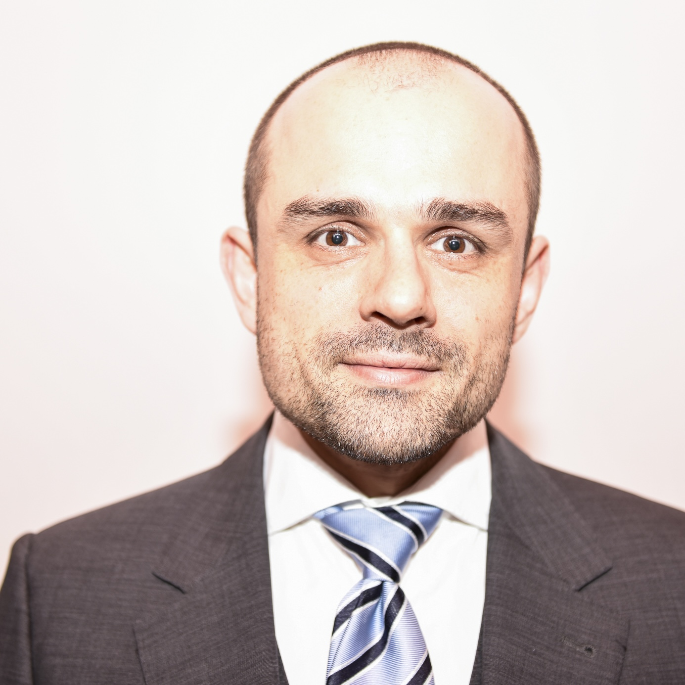

AI Scientist, Valencian Research Institute for Artificial Intelligence (VRAIN), Universitat Politècnica de València
Researcher, The Psychometrics Centre, University of Cambridge
Visiting Researcher, Keio University
Supervisor:
José Hernández-Orallo
Email:
prr28@cam.ac.uk
Google Scholar · CV · Cambridge profile · LinkedIn · GitHub · X · Bluesky · Instagram
My research is about measurement. I apply psychometrics — reliability, construct validity, item response models, and related tools — to large language models and to agentic systems. Where the object is a representation or a probability geometry rather than a questionnaire, I also use algebraic topology and information geometry (Fitz, Romero & Schneider, 2024). The point is not to treat models as people. Anthropomorphism is a standing problem in this field. I am interested in substrate-free psychometrics: instruments and constructs that can be justified for artificial, hybrid, and human systems without assuming a human mind (Romero, Fitz & Nakatsuma, 2024). The aim is measurements stable enough to support claims about tendencies, risks, and interventions.
Three distinctions organise most of the work:
Concretely, this has included psychometric evaluation and shaping of personality-like response patterns in language models (Serapio-García et al., 2025; Romero, Fitz & Nakatsuma, 2024; Fitz, Romero et al., 2025), work on placing model performance on human-anchored scales (Romero et al., 2026), and work on collective adaptation in interacting LLM agents (Horibe et al., 2026). The current applied setting is AgentGuard. Looking ahead, I want to specialise further on the evaluation of agentic systems that regulate, improve, and evolve themselves.
I sit in an AI evaluation group, not a product lab. I am more interested in whether a claim is measurable than in whether a demo is impressive.
AgentGuard is a project I proposed, that was awarded under Microsoft’s Agentic AI Research and Innovation (AARI) programme, and that I co-lead with Haotian Li (Microsoft Research). Official page: Early-Warning and Routing for Predictable Agentic AI on Azure.
The problem is simple to state and hard to measure. Agentic systems spend tokens, call tools, and sometimes fail late. AgentGuard asks whether the first part of a trajectory already contains enough information to predict the rest: halt what is going wrong, or route to another agent, another plan, or a human. The evaluation side of this is demand-aware (via ADeLe), not a single leaderboard score.
My part of the work is the measurement layer. Early-warning only helps if the signals correspond to something real: individual behavioural propensities, and group-level patterns when several agents act together — including hybrid teams. That is a psychometric problem as much as an engineering one: reliability, validity, and whether a score predicts behaviour on held-out tasks, without smuggling in a human personality inventory as if it were a universal ontology. Team composition is not just a list of capability ratings. Propensities can shift, stack, and propagate; evolutionary dynamics in the team are part of what has to be measured, not an afterthought.
The project is a collaboration with José Hernández-Orallo and colleagues at VRAIN / UPV, the University of Tokyo, RIKEN, and Microsoft Research.
A complete and more current list is on Google Scholar. Preprints are labelled as such.
Serapio-García, G., Safdari, M., Crepy, C., Sun, L., Fitz, S., Romero, P., Abdulhai, M., Faust, A., and Matarić, M. (2025). A psychometric framework for evaluating and shaping personality traits in large language models. Nature Machine Intelligence, 7, 1954–1968.
Romero-Alvarado, D., Martínez-Plumed, F., Pacchiardi, L., Save, H., Pawar, S. M., et al. (2026). Capabilities ain't all you need: measuring propensities in AI. arXiv:2602.18182. Preprint.
Romero, P., Martínez-Plumed, F., Tidler, Z. R., Téhénan, M., Chen, S., et al. (2026). From human-level AI tales to AI leveling human scales. arXiv:2602.18911. Preprint.
Horibe, K., Hatakeyama, M., Masumoto, G., Hashimoto, T., and Romero, P. (2026). Scale-dependent collective adaptation in self-amending LLM societies: a cross-family study of emergent governance. arXiv:2605.17510. Preprint.
Fitz, S., Romero, P., Basart, S., Chen, S., and Hernández-Orallo, J. (2025). Psychometric personality shaping modulates capabilities and safety in language models. arXiv:2509.16332. Preprint.
Romero, P., Fitz, S., and Nakatsuma, T. (2024). Do GPT language models suffer from split personality disorder? The advent of substrate-free psychometrics. arXiv:2408.07377. Preprint.
Fitz, S., Romero, P., and Schneider, J. J. (2024). Hidden holes: topological aspects of language models. arXiv:2406.05798. Preprint.
Izzidien, A., Fitz, S., Romero, P., Loe, B. S., and Stillwell, D. (2023). Developing a sentence-level fairness metric using word embeddings. International Journal of Digital Humanities, 5(2–3), 95–130.
Koch, T. K., Romero, P., and Stachl, C. (2022). Age and gender in language, emoji, and emoticon usage in instant messages. Computers in Human Behavior, 126, 106990.
Romero, P., and Fitz, S. (2021). The use of psychometrics and artificial intelligence in alternative finance. In The Palgrave Handbook of Technological Finance, 511–587.
Fitz, S., and Romero, P. (2021). Neural networks and deep learning: a paradigm shift in information processing, machine learning, and artificial intelligence. In The Palgrave Handbook of Technological Finance, 589–654.
Before concentrating on AI evaluation I spent a long time on organisational measurement: psychometrics, assessment design, and people analytics in applied settings. I still teach that material at Cambridge and occasionally advise on it. I treat it as a neighbouring craft — how to measure people in institutions — not as the centre of the research.
The connection I do want to keep is methodological. Organisations taught me that a score without a validity argument is just a number with a dashboard. That is also the problem in AI evaluation.
Peter Romero is an AI scientist at the Valencian Research Institute for Artificial Intelligence (VRAIN), Universitat Politècnica de València, working with José Hernández-Orallo on the evaluation of AI systems. He is a researcher at The Psychometrics Centre, University of Cambridge, and a visiting researcher at Keio University.
He received a PhD in Bayesian statistics from Keio University, an MPhil in psychometrics from the University of Cambridge, and a Diplom-Psychologe (MSc equivalent) from the University of Hamburg. His current work concerns psychometric methods for language models and agentic systems: measuring behavioural propensities in a substrate-free way, rather than importing human trait inventories by default, and using those measurements for early-warning and routing. He proposed, was awarded, and co-leads AgentGuard with Haotian Li (Microsoft Research). Looking ahead, he wants to concentrate further on the evaluation of self-regulated, self-improving, and self-evolving autonomous agents. He has a longer background in applied people analytics, which is now a secondary activity.